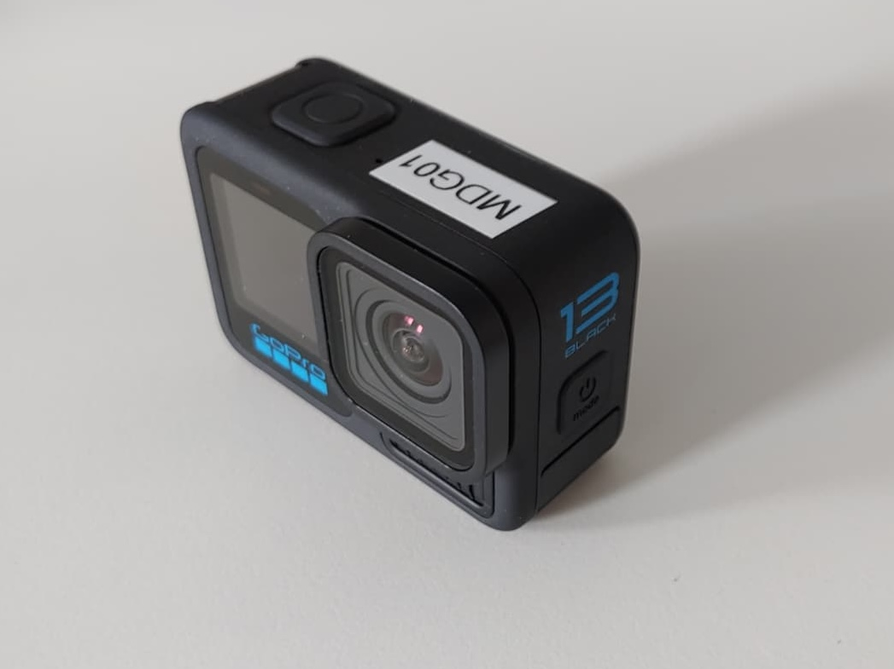
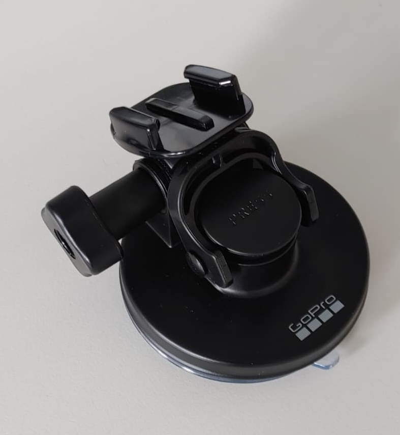
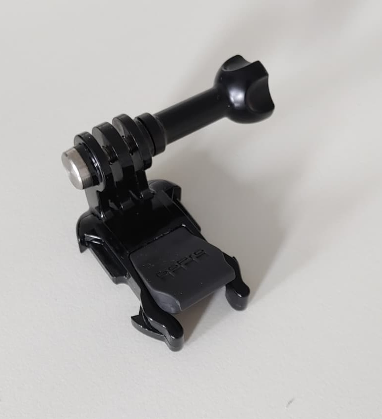
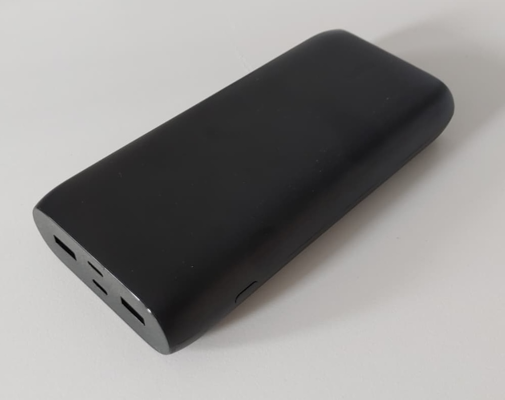
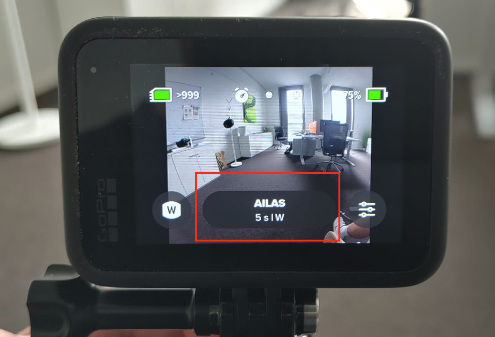

Camera Usage Guide: AILAS Project#
This documentation provides instructions on how to set up and use the GoPro cameras for the in field aquisition, including detailed instructions on all necessary steps, checklists for the start and end of data aquisition and tips for troubleshooting.
Equipment Checklist#
Before departure, ensure you have the following:
Item |
|---|
GoPro Hero 13 |
MicroSD card 1TB |
Powerbank |
USB-C Charging Cable |
GoPro Suction Mount |
Printed Copy of This Guide |

Fig. 74 GoPro camera#

Fig. 75 Suction mount#

Fig. 76 Clip attachment#

Fig. 77 Powerbank#
Camera Installation#
Choose Mounting Location#
Instructions |
Notes |
|---|---|
1. Mount inside the car, center of windshield or behind rearview mirror |
Avoid obstructing driver’s view. |
2. If needed clean glass before attaching suction mount |


Attach GoPro with suction mount#
Instructions |
Notes |
|---|---|
1. Press suction cup firmly against windshield |
Make sure locking lever is in UP position |
2. Press the mounts button down with good force |
|
3. Flip lock lever down to secure the mount |
Wiggle the mount to check if it fits tight |
4. Attach GoPro with the clip attachment and thumbscrew to the mount |
Make sure Gopro is equipped with clip attachment |
5. Adjust camera angle |
Ensure lens faces forward, level with the road |
Tip for optimal camera alignment
To fine tune the camera angle for optimal alignment just barely unscrew the screw that connects the GoPro to the clip attachment and slighty adjust the camera angle. To avoid that the camera is tilted to one side make sure that the “GoPro” logo on the suction mount is facing straight up when attaching the suction mount.


{kind=link}
{kind=link}
{kind=link}
{kind=link}
Power Setup#
Instructions |
Notes |
|---|---|
Connect GoPro to Powerbank using USB-C cable |
|
Place Powerbank securely (e.g., glove compartment or dash) |
Powerback should be stored safely in case of e.g. abrupt breaking |
Ensure power connection before driving |
Charging symbol should be visible on the top right corner of GoPro screen |
Using your car’s power outlet
If your car has an appropriate power outlet to connect with the USB-C socket of the camera, you can use it instead the powerbank. Don’t forget to unplug after the trip.
Set up Image Capturing#
Configuration of settings#
Camera settings can be easilily configured scanning the provide QR code with the GoPro. This is the standard setup. In the case the QR code setup should not work the manual setup is described in addition. If possible always use the QR code setup.
Instructions |
Notes |
|---|---|
Hold down Power/Mode button to turn on the GoPro. |
|
Scan the following QR code with the Gopro by pointing the lens towards the code |
If sucessful a QR_code icon with a red checkmark should pop up |
Check if “AILAS” is displayed in the mode overview in the bottom centre of the screen |
If the camera already is set in the “AILAS” mode you do not have to configure the settings.
QR code configuration#

Fig. 83 Scan this QR code#

Fig. 84 Button overview#
{kind=link}

Fig. 85 Camera is in AILAS mode#
QR Code Scanning
If the scanning of the QR code is not working immeadiately try in different lighting conditions or with the camera closer to the code.
Alternative Manual Configuration#
Instructions |
Notes |
|---|---|
1. Press the Mode/Power button until the screen displays “Timelapse” |
|
2.Tap the settings icon (bottom right) and configure as follows: |
Leave remaining settings unchanged |
3. Tap the back arrow to save and return to the main screen. |
in the bottom centre of the scrren should now be displayed: “Time Lapse Photo 5s W” |
Start/Stop Capturing Images#
Instructions |
Notes |
|---|---|
1. Tap the Shutter button (top button) to begin shooting. |
|
2. GoPro will now take one photo every 5 seconds. |
Red blinking every 5 seconds indicates that the camera is shooting |
3. Tap the Shutter button again to stop. |
|
4. Hold the Power button to turn off GoPro at the end of the drive. |
The camera will beep a couple of times when turning off |
Start of Drive Checklist#
Camera Setup#
Mount the camera on the windshield facing straight ahead.
Connect the Powerbank to the camera with the USB-C cable.
Store the Powerbank somewhere safe so it won’t move while driving.
Start Filming#
Hold the side power button until the screen turns on.
Scan the QR code to configure settings (if not working manual setup)
Wait about 1 minute for the camera to pick up GPS signal
Press the top shutter button (big button on top) to start capturing
Final Pre-Drive Check#
Is the camera firmly mounted?
Is camera level and facing straight ahead?
Is the GoPro blinking every 5 seconds (taking photos)?
Is the Powerbank connected and charging the GoPro?
Is the camera orientation setting correct? If the menu on the camera back screen displays upside down, the setting is incorrect.
End of Drive Checklist#
Stop Filming#
Press the top shutter button to stop capturing.
Hold the power button on the side until the screen turns off.
Unplug the USB-C cable from the GoPro.
Inspect the Equipment#
Check that the mount is still tight and GoPro is undamaged.
Clean the camera lens if dusty or dirty.
Leave the GoPro securely mounted if safe, or store it in its case or bag.
Charge Powerbank (if applicable)#
Plug the Powerbank into a wall socket to charge overnight.
Report Any Problems#
Contact technical support immediately if:
The GoPro didn’t work
The mount fell off and can’t be reinstalled
The Powerbank didn’t charge
Anything looked broken or unusual
Troubleshooting Tips#
Issue |
Solution |
|---|---|
GoPro not turning on |
Check battery level or connect Powerbank |
Photos not being taken |
Ensure “AILAS” mode is active and Shutter is pressed |
Powerbank not charging |
Check cable connection; try another USB port |
Suction mount falling off |
Clean glass and remount (in different spot) |
GoPro beeps/overheats |
Turn off for 5 mins in shade, then resume |
QR Code is not scanned |
Use alternatice code or perform manual configuarion |
{kind=link}
{kind=link}
{kind=link}
Support Contact#
If anything goes wrong or you’re unsure, don’t hesitate to contact:
Alec Schulze-Eckel & Oliver Fritz
humanitarian_gi@heigit.org